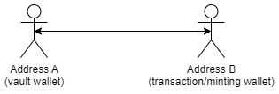

Consolidations are distinct from delegations and are used to establish an on-chain message for Seize.io
to treat two or more addresses as one for calculating wallet-related metrics such as total cards held, total unique cards held, and TDH.
This allows for a unified view of your NFTs in on-site galleries on seize.io and for any allowlist calculations.
You can set consolidations for either "All Collections" or just "The Memes" contract; if both are set, the "The Memes" contract will be used for The Memes.
Assuming two sample addresses:
- Address A (vault) : 0xAcf42B85eCb77d9332584119FD78a3DE9953c2a0
- Address B (transaction/minting wallet) : 0x3558C942EeA9e9Bb9b1a6A02d272756EDD3A1Fe4
